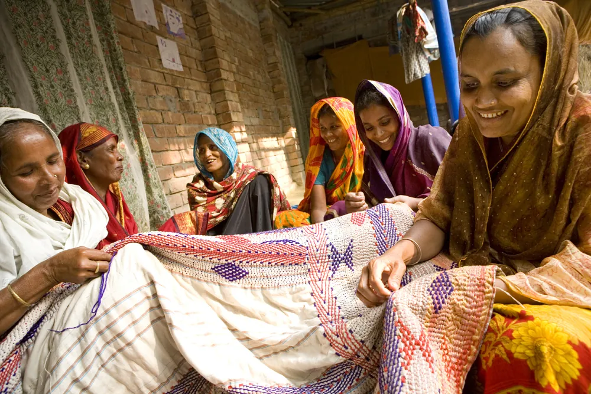

合作流程
五个步骤，从样品开始。
- 01
咨询
告诉我们您想做什么、选择哪条生产线以及大概数量。我们会回复问题、方案和样品费用。
免费 - 02
样品
在合适的生产线制作样品。样品费需用银行卡预付。
样品费（预付） - 03
报价
样品确认后，您会收到包含单价、数量、交期和付款条件的报价。
条件以报价为准 - 04
生产
生产过程中进行检查，并对照确认样品进行终检。
按报价 - 05
运输
由 Revival Global Ltd 从孟加拉国出口。快递使用 DHL 或 FedEx；大批量订单走海运。可应要求安排 DDP。
运费按报价
付款节点：样品制作前以银行卡支付样品费 · 生产和运输按报价条件。



制作者
手工艺，也是一份工作。
手工艺线源于 Revival 与孟加拉国女性手工艺人的长期合作：通过一笔笔订单，把传统刺绣和织造变成有收入的工作。
每一笔手工订单都是手工制作，因此每件略有不同。我们会在样品阶段展示差异范围，并在生产前约定可接受的标准。
关于 Revival案例
首批案例，准备中。
我们将在获得相关品牌许可后，在这里发布案例：做了什么、做了多少、用了多长时间。